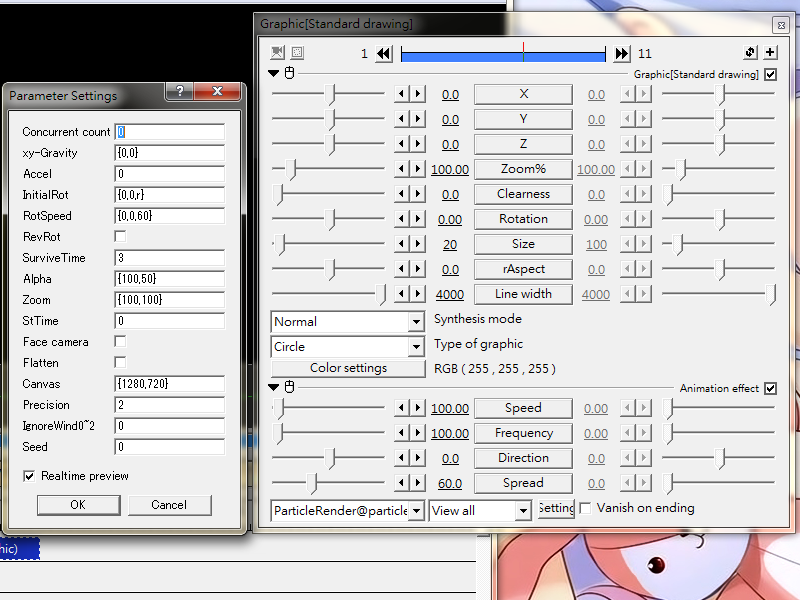

Fig01: Essential child FX "ParticleRender" settings
ParticleRender
(Background in middle school physics is highly recommended in order to gain a better understanding on this article)
ParticleRender@particle_ri_ver3 is the only child effect that actually generates visible particles.It can be attached to any Graphics or Image object to generate a simple particle effect.
Unlike the built-in particle generator, this FX does not support the use of time-dependent change via mid-points.
There are facilities to replace the use of mid-point, so don't worry.
This effect should be the last one among the attached @particle_ri_ver3 effect queue.
Sliders
Speed
Initial velocity as displacement per second for each new particle
Frequency
number of particles generated per 100ms
Direction
Initial direction when the particle is ejected. 0 means South.
Spread
Particles will be ejected within the sector Direction±Spread. Therefore a value of 180 will emit particles in all direction. Note that this effect alone will not emit particle along the z-axis(i.e. depth)
Check box
Vanish on ending
Make fragments' survival time ends at object's end
Setting dialog
Concurrent count
Number of particles to be emitted at the same time. Similar to Frequency, increasing this value increases the overall particle amount. You can input a range in the form of {min_value,max_value} and the script will choose a random value in this range at run time.
xy-Gravity
Apply external force along the specified axis
Positive value will add acceleration to the positive direction(x:right,y:bottom), while negative value will apply force towards the negative direction(x:left,y:top)
A single number in this field will apply force along the y-axis only
To apply a 2D force vector, use the form {gravity_x,gravity_y}
Accel
Apply acceleration or deceleration to each particle. Use positive value for acceleration, negative value for deceleration. Particle may stop still for deceleration.
InitialRot
Initial particle rotation state in the form {x-rotation,y-rotation,z-rotation}
To set the three values as the same, just enter a single value.
To use a random value, input r instead of a number like: {0,r,0}. This will cause random rotation along the y-axis when a particle is emitted.
RotSpeed
Rotation amount per second,i.e. angular speed. Higher value makes particle spin faster.
Input a single value to set angular speed for the three axis to the same value.
To set the value for each axle independently, use the form {x-value,y-value,z-value}
RevRot
Reverse rotation. When checked, a particle will have a 50% chance that RotSpeed be multiplied by -1.In effect, half of the emitted particles will have the opposite spin.
SurviveTime
The time from a particle is emitted to the moment it disappear, in second.
Alpha
Transparency. 100 being opaque, 0 being completely transparent.
This field use a pair of value {starting_alpha, ending_alpha}.
If only a single value is defined, it will assume {100, value}
Starting_alpha is the transparency when a particle is emitted. Ending_alpha is the transparency just before a particle vanish (as controlled by SurviveTime)
Zoom
Change the size of a particle over time in percent.
100 being the original size, 0 being invisible, 200 being double sized.
Input format: {starting_zoom,ending_zoom}
If only a single value is given, assume the same as {100, value}
Starting_zoom means the magnification for a particle when first emitted. Ending_zoom means the magnification of a particle just before SurviveTime expires.
StTime
A delay interval starting from the object's start to the emission of the first particle. Value in seconds.
Face camera
When used with the Camera Control object, particle's front will always turn to face the camera directly. This effect would be override by non-zero RotSpeed for x or y axis
Flatten
By default, particles exist as separate entity. When this option is checked, all particles' images are merged and flatten to a single entity. Useful for casting extra effects after ParticleRender.
Note that domain display(Emission@ and Bounce@) will be non-functional when this option is active.
Canvas
The size of the flatten image when Flatten option is enabled.
Input format: {width_px, height_px}
Giving a single value would means the same width and height
Precision
At low value, particles may look bumpy. A value of 5 usually gives sufficiently smooth motion.
IgnoreWind0~2
Define whether particle should be affected by Wind@ or grid info from Depth_n'Grid@
0: affected by Wind and Grid
1: Not affected by Wind or Grid
2: Pass on the same Wind/Grid effect to the ParticleRender object on layer N+1
Option 1 maybe useful when using the Flatten option.
Use option 2 to define a single Wind object and share its effect to multiple particle objects in layers below.
ParticleRender object on the largest layer must use 0, otherwise the velocity graphs may keep showing up.
Seed
A number for use with the random number generator. Use negative value to remove random variation across layers.